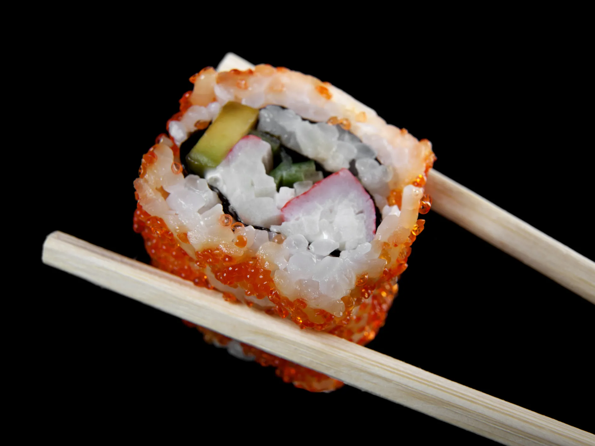
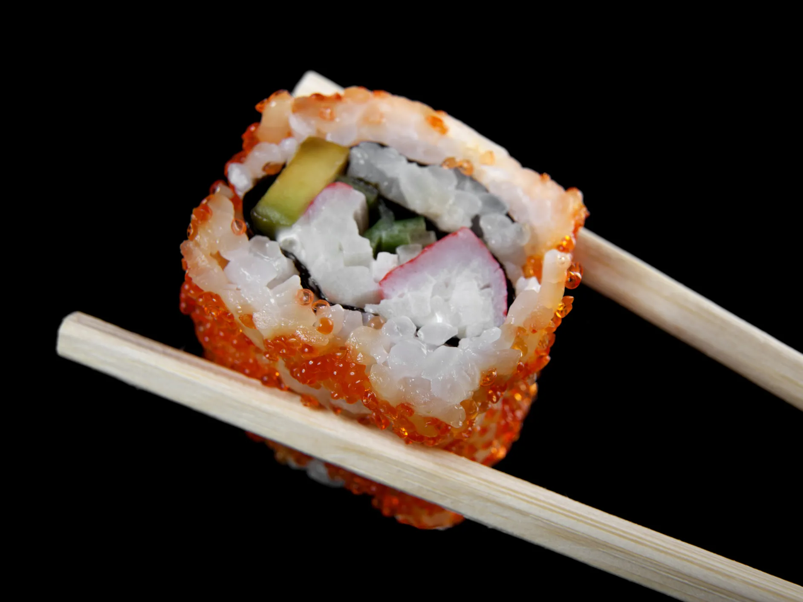
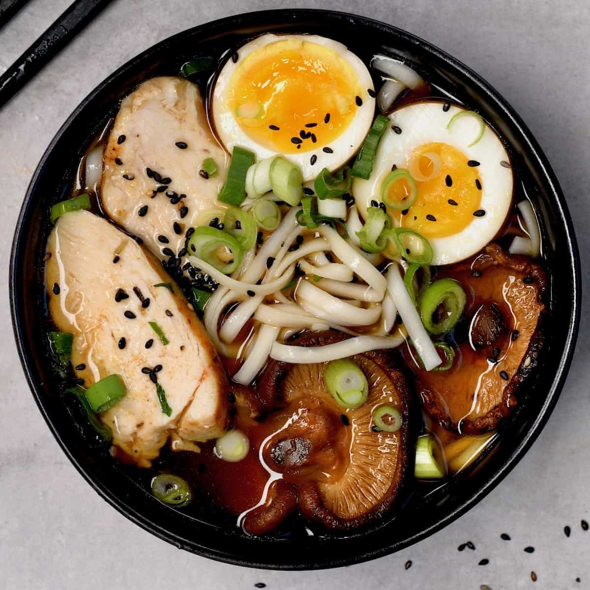

Smoked salmon & avocado sushi
Fancy making sushi at home? This simple recipe makes 32 healthy little bites, ideal for lunch or served as canapés
Fancy making sushi at home? This simple recipe makes 32 healthy little bites, ideal for lunch or served as canapés
Use chicken, ramen noodles, spinach, sweetcorn and eggs to make this warming soup, ideal for when you crave something comforting yet light and wholesome.
Bake these easy vanilla cupcakes in just 35 minutes. Perfect for birthdays, picnics or whenever you fancy a sweet treat, they're sure to be a crowd-pleaser

This website is made using HTML5, CSS and Vanilla JavaScript. This is a food blog website.